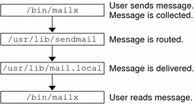

Previous
Previous
Mail Service Programs and Files
Mail services include many programs and daemons that interact with each other. This section introduces the files, programs, terms, and concepts that are related to administering electronic mail.
Enhancement for vacation Utility
Starting in the Solaris 10 release, the vacation utility has been enhanced to enable a user to specify which incoming messages receive autogenerated replies. With this enhancement the user can avoid sharing confidential or contact information with unknown people. Messages from spammers or unknown people would not receive a reply.
This enhancement works by matching an incoming sender's email address to a list of domains or email addresses in a .vacation.filter file. This file is created by the user and is in the user's home directory. If a domain or email address match is found, a reply is sent. If no match is found, no reply is sent.
The .vacation.filter might contain entries such as these:
company.com mydomain.com onefriend@hisisp.com anotherfriend@herisp.com
Note that each line contains one domain or one email address. Each entry must be on a separate line. For a sender's email address to match with an email address entry, the match must be exact, except for case. Whether the letters in the sender's address are lowercase or uppercase is ignored. For a sender's email address to match with a domain entry, the sender's address must contain the listed domain. For example, both somebody@dept.company.com and someone@company.com would be a match for a domain entry of company.com.
For more information, see the vacation(1) man page.
Contents of the /usr/bin Directory
The following table shows the contents of the /usr/bin directory, which is used for mail services.
Name | Type | Description |
|---|---|---|
File | A program to manipulate the NIS+ aliases map. | |
File | A user agent. | |
File | A filter to store mail in SunOS 4.1 mailbox format. | |
File | A program that lists the content of the mail queue. | |
File | A program that is used to read mail statistics that are stored in the /etc/mail/statistics file (if present). | |
File | A user agent. | |
File | A program that connects to the mailer for address verification and debugging. | |
File | A command to “uncompile” the alias database. Refer to the uncompile information that is provided in the man page for praliases(1). | |
Symbolic Link | A symbolic link to /usr/bin/mail. Command that is often used to permit only the sending of mail. | |
File | A command to set up an automatic reply to mail. |
Contents of the /etc/mail Directory
The following table shows the contents of the /etc/mail directory.
Name | Type | Description |
|---|---|---|
File | Default settings for the mailx user agent. | |
File | Mail-forwarding information. | |
File | Default binary form of mail-forwarding information that is created by running newaliases. | |
File | Binary form of mail-forwarding information that is created by running newaliases. Can still be used, but is no longer used by default starting with the Solaris 9 release. | |
File | Binary form of mail-forwarding information that is created by running newaliases. Can still be used, but is no longer used by default starting with the Solaris 9 release. | |
File | Default settings for the mailx user agent. | |
Symbolic link | A symbolic link from this sample configuration file for main systems to sendmail.cf is provided for backwards compatibility. This file is not needed in version 8.13 of sendmail. | |
File | List of all domains for which relaying is allowed. By default, only the local domain is allowed. | |
File | Configuration file for mail routing. | |
File | New configuration file for the mail submission program (MSP). For more information, refer to submit.cf Configuration File From Version 8.12 of sendmail. | |
File | Optional file that you can create if the number of aliases for the mail host is too long. | |
File | Help file that is used by the SMTP HELP command. | |
File | File that lists the PID of the listening daemon and is now in /var/run. | |
File | sendmail statistics file. If this file is present, sendmail logs the amount of traffic through each mailer. Previously, this file was called sendmail.st. | |
Symbolic link | A symbolic link from this sample configuration file for subsidiary systems to sendmail.cf is provided for backwards compatibility. This file is not needed in version 8.13 of sendmail. | |
File | File that lists the users (one user per line) who can be trusted to perform certain mail operations. By default, only root is in this file. Certain mail operations, when performed by untrusted users, result in the following warning, X-Authentication-Warning: header being added to a message. |
Contents of the /etc/mail/cf Directory
Within the /etc/mail directory is a subdirectory, cf, that contains all of the necessary files to build a sendmail.cf file. The content of cf is shown in Table 14-9.
Starting in the Solaris 10 release, to support a read-only /usr file system, the content of the /usr/lib/mail directory has been moved to the /etc/mail/cf directory. Note, however, these exceptions. The shell scripts /usr/lib/mail/sh/check-hostname and /usr/lib/mail/sh/check-permissions are now in the /usr/sbin directory. See Other Files Used for Mail Services. For backward compatibility, symbolic links point to each file's new location.
Table 14-9 Contents of the /etc/mail/cf Directory Used for Mail ServicesName | Type | Description |
|---|---|---|
File | Describes the configuration files. | |
File | Previously named cf/main-v7sun.mc. Is the main configuration file. | |
File | Provides rules for building new configuration files. | |
File | Is the configuration file for the mail submission program (MSP), which is used to submit messages. | |
File | Previously named cf/subsidiary-v7sun.mc. Is the configuration file for hosts that NFS-mount /var/mail from another host. | |
Directory | Provides site-dependent subdomain descriptions. | |
File | Is the generic domain file from Berkeley Software Distribution. | |
File | Is the domain file with changes that make sendmail function like the previous Solaris versions of sendmail. However, relaying is disabled completely, sender addresses with no host name are rejected, and unresolvable domains are rejected. | |
File | Is the default domain file with changes that make sendmail function like the previous Solaris versions of sendmail. | |
Directory | Contains definitions of specific features for particular hosts. See README for a full description of the features. | |
Directory | Contains site-independent include files. | |
Directory | Contains definitions of mailers, which include local, smtp, and uucp. | |
Directory | Describes various operating system environments. | |
File | Defines default local mailer as mail.local. | |
File | Defines default local mailer as mail.local. | |
File | Defines local mailer as mail. | |
File | Defines local mailer as mail.local (in LMTP mode), enables IPv6, specifies /var/run as the directory for the sendmail.pid file. |
Contents of the /usr/lib Directory
The following table shows the contents of the /usr/lib directory, which is used for mail services.
Table 14-10 Contents of the /usr/lib DirectoryName | Type | Description |
|---|---|---|
mail.local | File | Mailer that delivers mail to mailboxes. |
sendmail | File | Routing program, also known as the mail transfer agent. |
smrsh | File | Shell program (sendmail restricted shell) that uses the “|program” syntax of sendmail to restrict programs that sendmail can run to those programs listed in the /var/adm/sm.bin directory. Refer to the smrsh(1M) man page for recommendations about what to include in /var/adm/sm.bin. To enable, include this m4 command, FEATURE(`smrsh'), in your mc file. |
symbolic link | A symbolic link points to the/etc/mail/cf directory. For more information, refer to Contents of the /etc/mail/cf Directory. |
Other Files Used for Mail Services
Several other files and directories are used for mail services, as shown in Table 14-11.
Table 14-11 Other Files Used for Mail ServicesName | Type | Description |
|---|---|---|
/etc/default/sendmail | File | Lists the environment variables for the startup script for sendmail. |
/etc/shells | File | Lists the valid login shells. |
/etc/mail/cf/sh | Directory | Contains shell scripts that are used by the m4 build process and migration aids. |
File | Checks permissions of :include: aliases and .forward files and their parent directory path for correct permissions. | |
File | Verifies that sendmail is able to determine the fully qualified host name. | |
File | Queries and edits single records in database maps for sendmail. | |
File | Mail notification daemon. | |
File | Builds binary forms of keyed maps. | |
Symbolic Link | A symbolic link to /usr/lib/sendmail. Used to create the binary form of the alias database. Previously in /usr/bin. | |
File | Error message logger, used by sendmail. | |
File | Perl script for starting the client-side remote mail queue. | |
File | CDE mail user agent. | |
File | Mailboxes for delivered mail. | |
Directory | Storage for mail that is delivered by the client daemon. | |
Directory | Storage for mail that is delivered by the master daemon. | |
File | File that lists the PID of the listening daemon. |
Interactions of Mail Programs
Mail services are provided by a combination of the following programs, which interact as shown in the simplified illustration in Figure 14-2.
Figure 14-2 Interactions of Mail ProgramsThe following is a description of the interactions of mail programs.
Users send messages by using programs such as mailx. See the man page for mailx(1) for more information.
The message is collected by the program that generated the message, and the message is passed to the sendmail daemon.
The sendmail daemon parses the addresses (divides them into identifiable segments) in the message. The daemon uses information from the configuration file, /etc/mail/sendmail.cf, to determine network name syntax, aliases, forwarding information, and network topology. By using this information, sendmail determines which route a message must follow to get to a recipient.
The sendmail daemon passes the message to the appropriate system.
The /usr/lib/mail.local program on the local system delivers the mail to the mailbox in the /var/mail/username directory of the recipient of the message.
The recipient is notified that mail has arrived and retrieves the mail by using mail, mailx, or a similar program.
sendmail Program
The following list describes some of the capabilities of the sendmail program.
sendmail can use different types of communications protocols, such as TCP/IP and UUCP.
sendmail implements an SMTP server, message queuing, and mailing lists.
sendmail controls name interpretation by using a pattern-matching system that can work with the following naming conventions.
Domain-based naming convention. The domain technique separates the issue of physical from logical naming. For more information about domains, refer to Mail Addresses.
Improvised techniques, such as providing network names that appear local to hosts on other networks.
Arbitrary (older) naming syntaxes.
Disparate naming schemes.
The Solaris operating system uses the sendmail program as a mail router. The following list describes some of its functions.
sendmail is responsible for receiving and delivering email messages to a local delivery agent, such as mail.local or procmail.
sendmail is a mail transfer agent that accepts messages from user agents, such as mailx and Mozilla Mail, and routes the messages through the Internet to their destination.
sendmail controls email messages that users send.
By evaluating the recipients' addresses
By choosing an appropriate delivery program
By rewriting the addresses in a format that the delivery agent can handle
By reformatting the mail headers as required
By finally passing the transformed message to the mail program for delivery
For more information about the sendmail program, refer to the following topics.